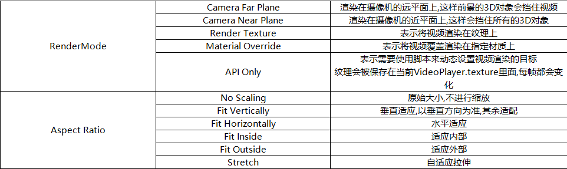
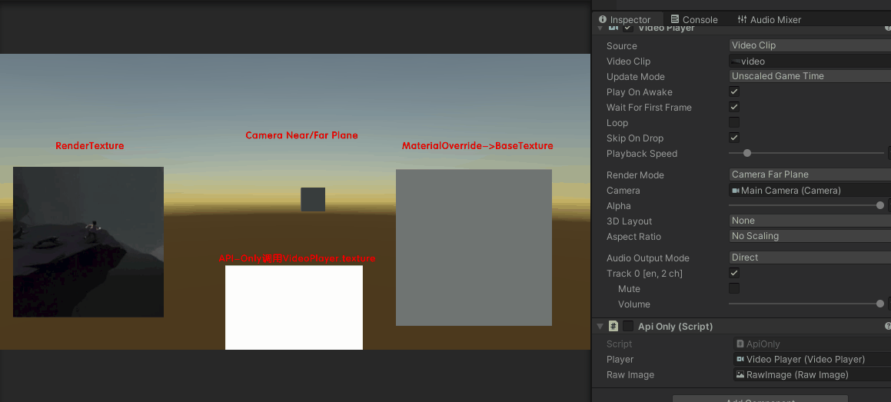
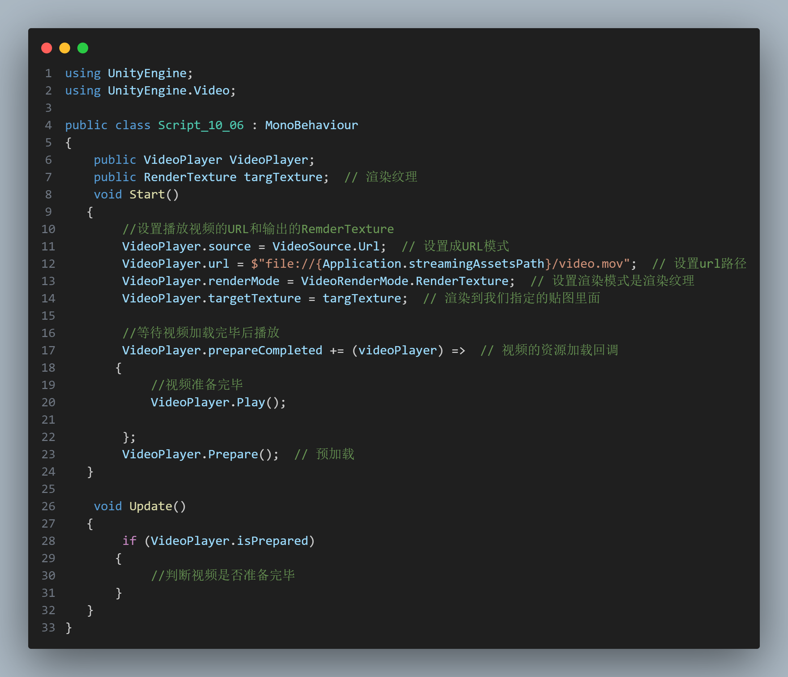
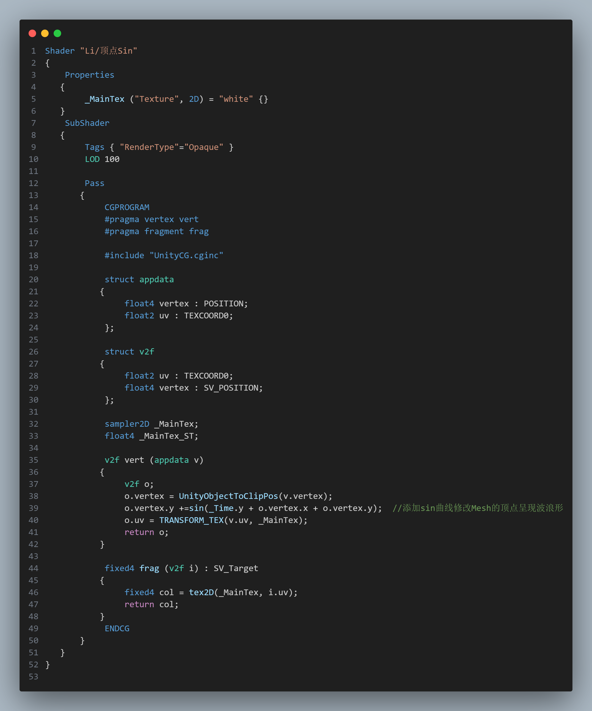
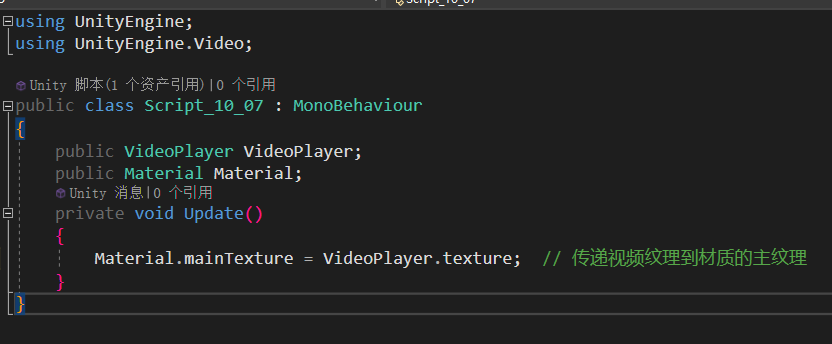
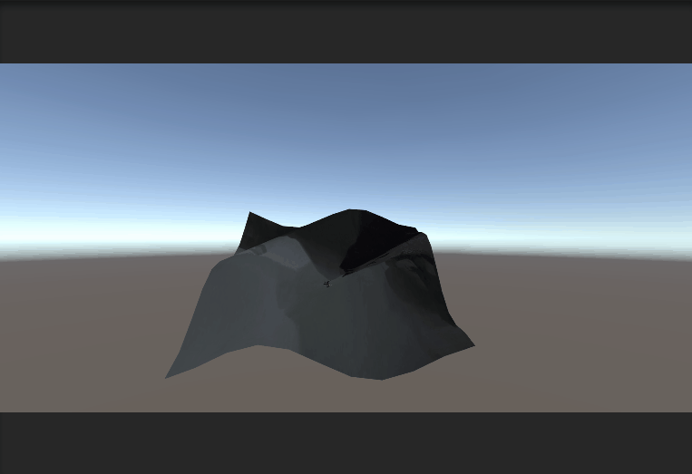
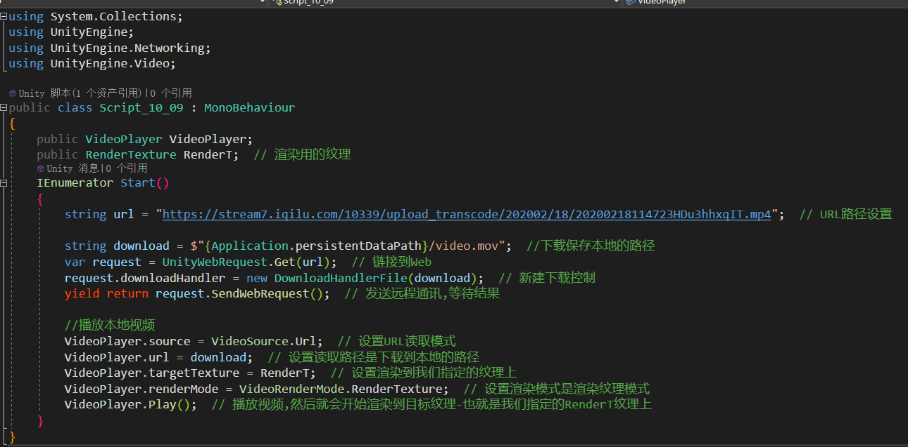

10.音频和视频
10.2视频
1.视频自适应和渲染模式参数详解
自适应参数:不缩放,垂直适应,水平适应,内部适应,外部适应,拉伸适应

渲染模式参数:渲染的摄像机远平面/近平面/渲染纹理/材质球BaseTexture覆盖/API调用

2.播放网络视频
file://读取本地视频http://读取网络视频

3.自定义视频显示
设置了Shader修改了顶点的位置实现波动
脚本传递视频的纹理

最终结果

4.下载视频到本地播放
通过VideoPlayer.time控制播放进度VideoPlayer.clip.length可以获取时长
通过代码从网络上下载视频到本地播放
